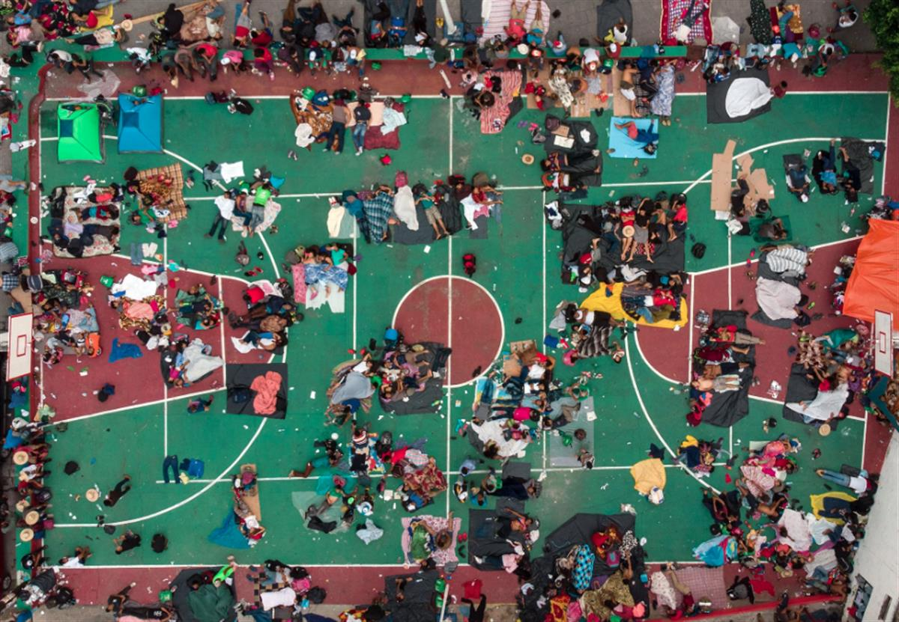
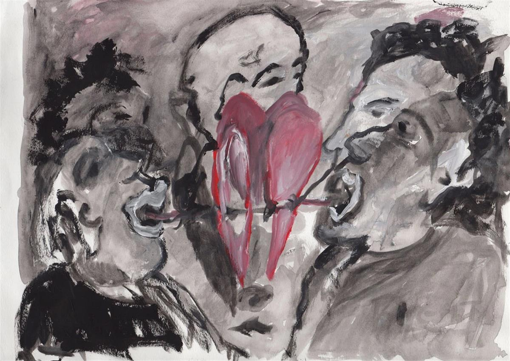
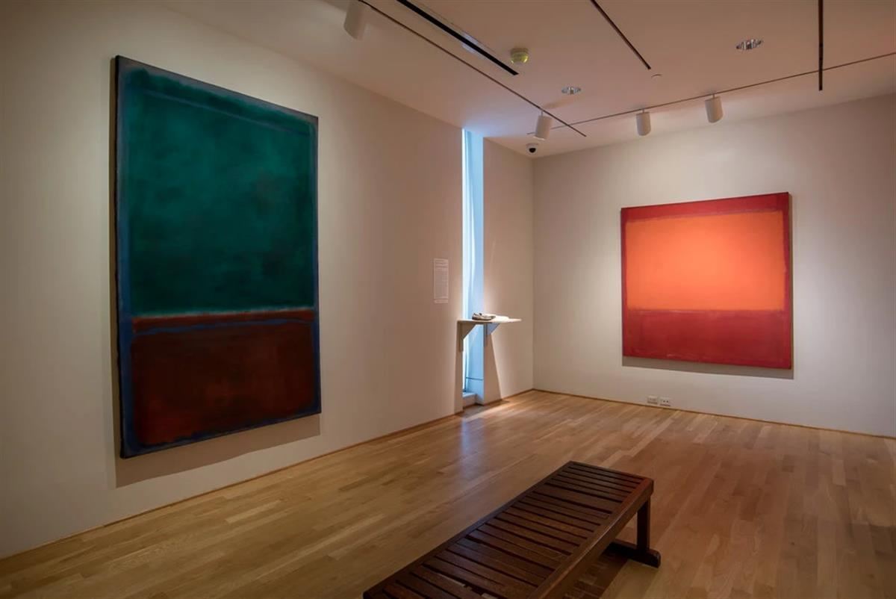
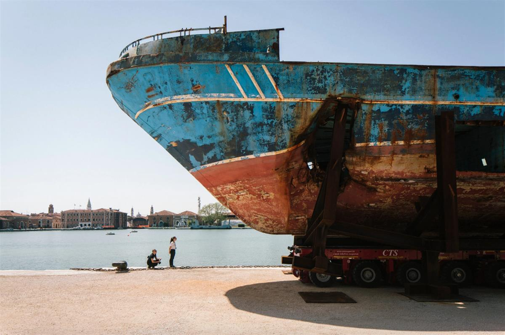
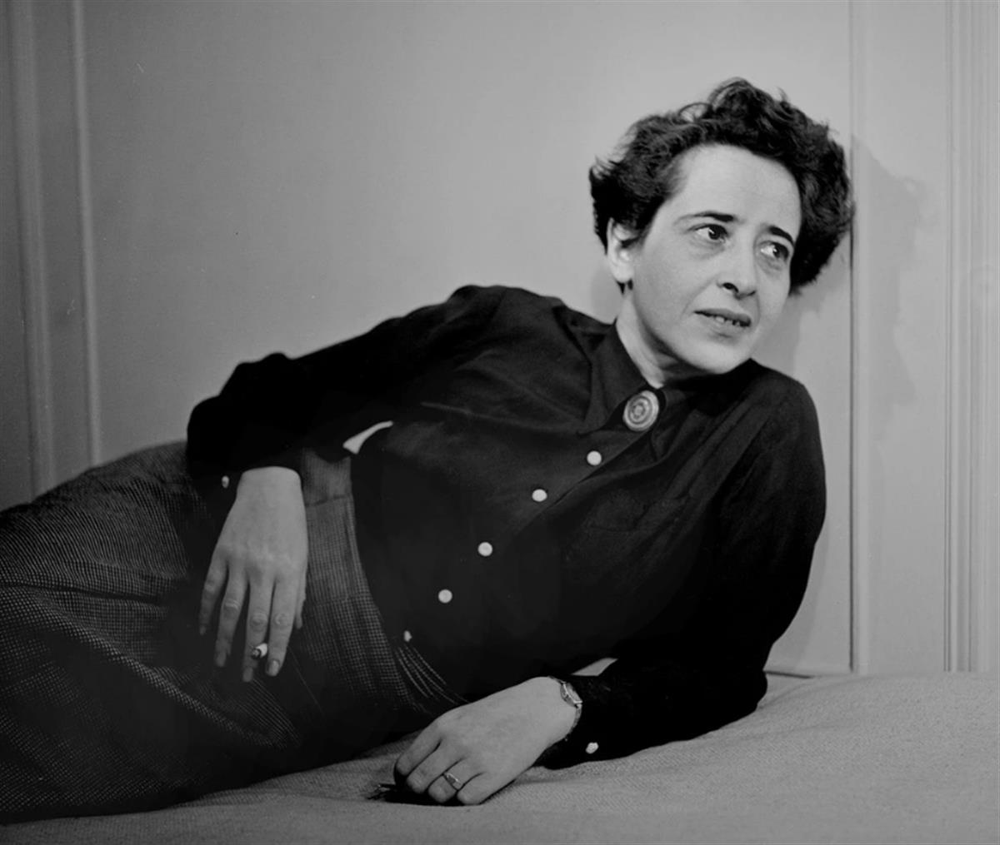
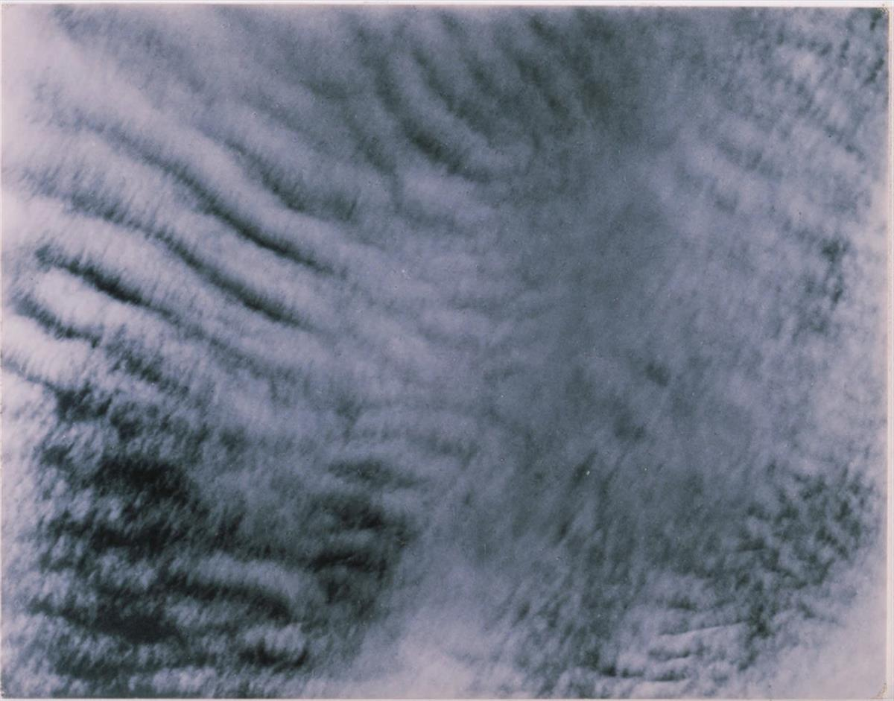
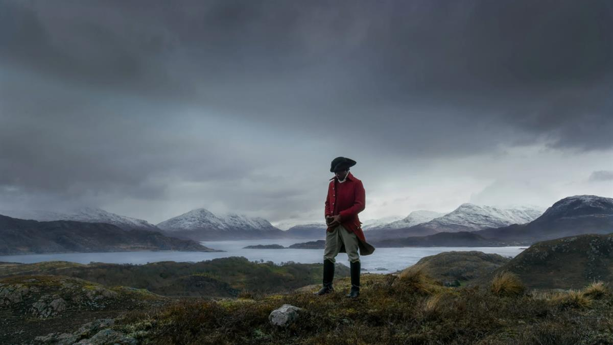

Liu Xiaodong, in his painting “Refugees 4” (2015), depicts Syrian refugees at the port of Lesbos gathered together in a moment of rest. A show at the Phillips Collection features 75 artists on migration and displacement.Credit...Liu Xiaodong and Massimo De Carlo
Liu Xiaodong, in his painting “Refugees 4” (2015), depicts Syrian refugees at the port of Lesbos gathered together in a moment of rest. A show at the Phillips Collection features 75 artists on migration and displacement.Credit...Liu Xiaodong and Massimo De Carlo
SOURCE: NEW YORK TIMES
CRITIC’S NOTEBOOK
The Museum Is the Refugee’s Home
Without exiles and émigrés there is no modern culture. A new show in Washington maps a century of art and displacement.
By Jason Farago
WASHINGTON — “In the first place, we don’t like to be called ‘refugees,’” Hannah Arendt wrote in 1943. She was in New York by then. A decade previously, the philosopher had fled her native Germany, without papers. After years in Paris as an “undocumented immigrant” (or, in another register, “an illegal”), she was sent with other Jews to an internment camp. She escaped, and made it to Portugal, then to the United States.
But in 1943 she was still stateless, and in her mordant, indispensable essay “We Refugees” she tried to fathom her place in a flood of displaced innocents, so traumatic that even those fleeing would rather not talk about it. “Hell is no longer a religious belief or a fantasy, but something as real as houses and stones and trees,” Arendt wrote. “Apparently nobody wants to know that contemporary history has created a new kind of human beings — the kind that are put in concentration camps by their foes, and in internment camps by their friends.”
Today the United Nations estimates that there are 25.9 million refugees worldwide, the highest number recorded since Arendt and countless others fled their homes during World War II. That figure is double the total from 2012, and may undercount the recent, huge displacements of citizens of Venezuela. More than half the refugees are children. If you include people forced from home who remain within their national borders, the number of displaced people is more than 70 million.

Guillermo Arias, “Aerial view of Honduran migrants heading in a caravan to the U.S., resting in a basketball court in San Pedro Tapanatepec, Oaxaca State, southern Mexico on October 28, 2018.”Credit...via Guillermo Arias for Agence France-PresseEvery one of them has the right to safe asylum, according to the Universal Declaration of Human Rights. Few are finding it — and the United States, which for decades led the world in welcoming refugees, has since 2017 decreased resettlements more steeply than any other country. Catastrophes that once elicited horror, charity and promises of change now go nearly unnoticed; on July 25, a boat capsized in the Mediterranean and left some 150 migrants dead, to nearly no international attention. Arendt is still right: “Apparently nobody wants to know.”
These are the lives that populate “The Warmth of Other Suns,” a poignant, solemn and utterly shaming exhibition through Sept. 22 at the Phillips Collection here. The show fills the Washington museum with the work of 75 artists, some staring down current crises of migration, others with more poetic views of movement and displacement.
Its approach to migration is broad, and informed byJacob Lawrence’s renowned “Migration Series” of 1941; the Phillips owns half of those paintings, and Lawrence’s scenes of African-American internal migration have been integrated into this show. It also includes historical materials such as Lewis Hine’s stark portraits of arrivals at Ellis Island in the 1920s, scared, hopeful, worn out, saved.
Yet this show focuses on a specific class of migrant: the refugees, who cross borders not (or not solely) in search of opportunity, but in fear for their lives. That means it focuses on the Mediterranean, the epicenter of this decade’s refugee crisis. A preponderance of today’s refugees, 6.7 million of them, come from Syria. Gothic drawings here by the artist Anna Boghiguian picture Syrians heading west from Beirut, while the Chinese artist Liu Xiaodong set up a studio in Lesbos, where he befriended and painted smiling, worried and just plain tired Syrians at rest in the port. Others, such as the Belgian filmmaker Chantal Akerman and the Mexican photojournalist Guillermo Arias, examine migration, policing and detention at our own southern border.

Anna Boghiguian, “Refugees in Beirut (They tied and put their hearts together),” from 2014, gouache on paper.Credit...Anna Boghiguian and Sfeir-Semler Gallery
Installation view of “The Warmth of Other Suns.” At left, Mark Rothko, “Green and Maroon” (1953), and Rothko’s “Orange and Red on Red” (1957).Credit...Kate Rothko Prizel & Christopher Rothko/Artists Rights Society (ARS), New York; Lee StalsworthAnd several artists in “The Warmth of Other Suns” were or have been refugees themselves, including Arshile Gorky, Mark Rothko, Vija Celmins, Mona Hatoum and Danh Vo. Much of their work does not directly touch on migration at all. Ms. Celmins, who was born in Latvia and spent years in refugee camps before coming to the United States in 1948, contributes two of her forlorn, uncannily similar rocks — one an actual found rock, the other a perfect copy in bronze.
A room of four numinous abstractions by Rothko (né Rothkowicz), whose family fled the pogroms of imperial Russia, has been equipped with speakers that play interviews with Mexican migrants, recorded by the Undocumented Migration Project. It is a coercive pairing, and serves mostly to underscore that Rothko’s abstractions offer no comforting answer to questions of identity and displacement.
The value of “The Warmth of Other Suns” — organized by Massimiliano Gioni and Natalie Bell, two curators at the New Museum in New York — lies in this intermingling of frank depiction of refugees and migrants with calmer, more abstract and even extraneous works of art. Together they outline a more fraught view of the art of the last century, in which the refugee is not an outsider looking in, but a central actor in the writing of a global culture. “Refugees,” Arendt wrote in 1943, “represent the vanguard of their peoples — if they keep their identity.”

“Barca Nostra,” by Christoph Büchel, at 2019 Venice Biennale.Credit...Gianni Cipriano for The New York TimesTHE REFUGEE CRISIS HAS NOT BEEN INVISIBLE in the art world. At this year’s Venice Biennale it is in fact all too visible — in the form of Christoph Büchel’s “Barca Nostra,” for which the Swiss artist exhibited an actual deathtrap vessel in which hundreds of migrants drowned. It has changed literature, especially in Germany, where novels like Jenny Erpenbeck’s “Go, Went, Gone” have examined the local consequences of a global crisis. Acclaimed films such as Nadine Labaki’s “Capernaum” and Aki Kaurismaki’s “The Other Side of Hope” have featured Syrian refugees in lead roles.
Other exhibitions have used images of refugees, or their actual persons, in ways that verge into tastelessness and exploitation. Two years ago I was disgusted by Olafur Eliasson’s “invitation” to refugees, mostly Africans, to labor inside a Venice Biennale exhibit, like at human zoos of the past. Marc Quinn, a British shock artist, has repulsively promised to freeze a block of refugees’ bloodand plop it down in front of the New York Public Library.
Yet much of the art, film and literature of the present crisis has misunderstood the refugee as an outsider to the West.Stories ofwar and forced displacement, in fact, have shaped Western civilization since Virgil’s “Aeneid.” The origin story of Rome is a tale of Mediterranean migration — departing from the coast of Anatolia, the starting point of many of today’s Syrian refugees — and foreshadows other societies founded by emigrants, evacuees, foundlings and aliens. Moses, Jesus and Muhammad were all refugees. The Thanksgiving holiday is a celebration of refugees, who fled from England to the Netherlands, then to Plymouth Rock.
Arendt writes that, with her generation, the nature of the refugee changed. “We committed no acts,” she wrote in 1943, “and most of us never dreamt of having any radical opinion.” The refugee was no longer a political designation, but a bare fact of life — and Jewish refugees like Arendt, Einstein, Freud, Adorno, Claude Lévi-Strauss and Eric Hobsbawm would soon reshape the very foundations by which we now understand art and society.

Fred Stein’s portrait of Hannah Arendt, the German-born political theorist, author and refugee, 1949.Credit...Estate of Fred Stein/Artists Rights Society (ARS), New York; Fred Stein Archive, via Getty Images“Modern Western culture is in large part the work of exiles, émigrés, refugees,” wrote the Palestinian-American philosopher Edward Said, who left Jerusalem for Cairo just before the establishment of the state of Israel. Refugees from the Bauhaus, including Walter Gropius and Anni Albers, brought modern design to the United States. The cinema of Billy Wilder, Fritz Lang, Marlene Dietrich and Milos Forman. The novels of Thomas Mann, Vladimir Nabokov, Milan Kundera, Gary Shteyngart, Viet Thanh Nguyen and Herta Müller. The music of Freddy Mercury, Gloria Estefan, Regina Spektor and M.I.A. All this is the art of refugees.
Had they wanted to, the curators of “The Warmth of Other Suns” could have organized an entire show of masterpieces solely by artists forced to flee their homelands: Marc Chagall, Piet Mondrian, Oskar Kokoschka, Max Ernst, Max Beckmann, Robert Capa, Lucien Freud, Eva Hesse, Christo, Dinh Q. Le, Ibrahim el-Salahi. Or Ai Weiwei, the Chinese dissident, who now resides in Berlin and has looked at the rise in migration in his sculptures of gates and fences and films such as “Human Flow.”
Instead, “The Warmth of Other Suns” imagines modern art itself as a kind of refugee camp, where despair and inertia intermingle with evocations of home, family and the everyday. Works of nearly unbearable pathos, such as a video by the Turkish artist Erkan Ozgen in which a deaf and mute child tries hopelessly to convey what he endured under the Islamic State, appear amid beautiful cloud studies by the photographer Alfred Stieglitz, or small, tender models of houses by the sculptor Beverly Buchanan.
A clip from Erkan Özgen’s “Wonderland,” 2016.CreditCredit...

Alfred Stieglitz’s “Equivalent”(1927), gelatin silver print. Stieglitz photographed clouds from 1922 into the ’30s; they became increasingly abstract equivalents of his own experiences and emotions.Credit...The Alfred Stieglitz Collection; The Phillips CollectionThere is beauty here, and perhaps too much of it in John Akomfrah’s over-acclaimed “Vertigo Sea,” a video installation that intercuts sweeping flyovers of the Atlantic with whales and polar bears; archival footage of nuclear tests; and audio of a Nigerian refugee who fell overboard while attempting to cross the Mediterranean and survived by hanging onto a tuna net. The sea should be a metaphor for modern history itself, but the waters here appear too much like some Discovery Channel nature documentary, and the video’s collisions of past and present feel elementary and cosmetic.
The more meaningful way to indict today’s neglect is to unearth how we ourselves are heirs to the stories of refugees. That was the strategy of the one incontestable masterpiece of today’s crisis: the film “Transit,” by the German director Christian Petzold, which seamlessly transposes a 1942 novel of refugees desperate to escape the Nazi incursion of Marseille to present-day France. Its casual achronicity turns a historical tale into a contemporary nightmare, and says with the simplest of means: to ignore the helpless is not forgivable, and certainly not new.

John Akomfrah, “Vertigo Sea” (2015), color video installation.Credit...Smoking Dogs Films; via Lisson Gallery“THE WARMTH OF OTHER SUNS,” one of the largest shows ever mounted by the 100-year-old Phillips Collection, has not been without its own contentions. This past spring, Washington’s transit authority refused to accept the Phillips’s advertisements, on the grounds that a show about refugees advocates a partisan political cause. (The authority reversed that decision without explanation in August, by which time the Phillips had already allotted its ad budget elsewhere.)
The Phillips’s board chairman, Dani Levinas, argued in The Washington Post that we make a category error when we treat as political the survival of those fleeing climate-ravaged central Africa, and “the Greek and Italian islands where desperate people, and sometimes their bodies, float ashore.”
And yet the Phillips exhibition is political — insofar as we accept that whether desperate people fleeing wars deserve to live or die is indeed a partisan question in the United States. In 2018, the Trump administration, whose chief executive has referred to migrants as “animals” who will “infest our country,” said it would reduce the number of refugees taken in by the United States to a record low of 30,000. American voters exhibit more complicated feelings about migration than total welcome or rejection;even citizens proud of their own immigrant heritage are deeply conflicted about the increase in migrants illegally crossing the Mexican border.
The refugee crisis has also upended European politics, from Germany to Bulgaria to Italy — where the interior minister, Matteo Salvini, has closed migrant reception centers, blocked rescue boats from docking and proposed to fine Italians who save the lives of migrants at risk of drowning.
Mr. Gioni, who is Italian, has framed “The Warmth of Other Suns” with two stories of migration to and from Italy. Downstairs, at the Phillips, are Italian magazine illustrations from the early 20th century that show migrant boats bound for America, some dramatically shipwrecked. Upstairs are scenes from Lampedusa, the southernmost Italian island, which became a graveyard for thousands who died at sea. The gallery includes a stomach-turning photograph of snarled, wrecked boats, photographed by Wolfgang Tillmans — as well as an open letter from Giusi Nicolini, who was elected mayor of Lampedusa in 2012, hanging in a simple frame.
“I am outraged by the desensitization that seems to have infected everyone,” the mayor writes.
The Italian coast guard is dragging the dead from the sea, she continues, while the governments of Rome and Brussels turn their back. Ms. Nicolini pleads, at least, for empathy. She pleads for mourning, as “every drowned body is delivered to me. As though its skin were white, as though it were one of our own children drowned while on holiday.”
In the last local elections, she lost her job.
Jason Farago is an art critic for The Times. He reviews exhibitions in New York and abroad, with a focus on global approaches to art history. Previously he edited Even, an art magazine he co-founded. In 2017 he was awarded the inaugural Rabkin Prize for art criticism. @jsf
SOURCE: NEW YORK TIMES